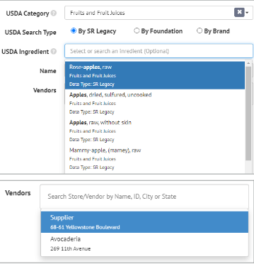

3. Raw Materials¶
Raw Materials are the lowest level of ingredients you use to build out your Batch Recipes. Cibos supports ‘recipe as ingredient’ functionality where an entry can be listed as both a Raw Material and Batch Recipe. Use the Search function to narrow down a long list of Raw Materials and find a specific Raw Material. On the Raw Materials header, you can also quickly see how many Raw Materials are on your list. For example, the Raw Materials list below has seven entries:
How to Add a New Raw Material
Click the Plus icon on the Raw Materials header to add a new Raw Material to your Raw Material list.

An Add Ingredient form will appear. The menu on the right-hand side of the Add Ingredient form allows you to navigate to different pages of the Ingredient form, while the page content is situated to the left-hand side.
Details
You start on the Details page, where you can enter the following information:
USDA Category – required, select the relevant USDA category from the drop-down list
USDA Search Type – required, select how this Raw Material is organized in the USDA’s FoodData Central Database, choose between By SR Legacy, By Foundation, or By Brands
USDA Ingredient – search for the ingredient within the USDA Search Type you specified. Be as specific as possible
Name – required
Vendors – choose a Supplier from the drop-down menu. The list of Suppliers is pulled from your CRM’s Customers & Suppliers list. You can add multiple suppliers to the list.

Once you select a Vendor, the Details page expands to include the following fields:
Default Vendor – check to denote this as your default Vendor for this Raw Material
SKU – required, stock keeping unit
Item Number
UPC – universal product code
Available Inventory – cannot manually enter, this information is pulled from your Inventory
Reorder Point – set the minimum stock level before the Raw Material must be reordered
Unit Cost ($) – how much does the Raw Material cost per unit
Unit Measurement – required
Liquid – check to denote this Raw Material as a liquid ingredient
Before continuing onto Recipe Measurements, you must enter all required fields.
Recipe Measurements
From the Recipe Measurements page, you can choose what measurements you want to support for your Recipes. If the Raw Material is solid you can choose from these options:
If your Raw Material is a liquid, you can choose from these options:
You can also choose to support multiple types of measurements, for example, if you want your Raw Material to be used measured in ounces or cups:
Package Level
Advance to the Package Level page to set how you receive these Raw Materials. The Category, USDA Ingredient, Name, and Vendors fields will already be pre-filled from the Details page
Now you can fill in the number of Units per Package and how they are received (Measurement). Then click Add.
You will see a new entry listed below, for this example, it’s 100 units per Case. Click the none under UPC and SKU to enter each value.
The Cost field is automatically populated using the Unit Cost ($) field from the Details page. You can click the Cost field to edit if necessary or click the X to delete a Units per Package entry.
Nutrition
The Nutrition page is already pre-filled using the USDA Search Type and USDA Ingredient fields on the Details page, but you can edit any field as needed.
You can also print Nutrition Facts labels with ease by clicking the Print icon next to the Nutrition label in the side menu
Claims
Add in Ingredient Claims on the Claims page by clicking the green Plus icon.
You can enter a new custom Ingredient Claim or select from previously used claims.
Upload Spec Sheet
Drag or Drop one or more files onto the gray area to Upload an Ingredient Spec Sheet. Or click the gray area to open your folders so you can navigate to the Spec Sheet.
Once a Spec Sheet has been uploaded, you will see it displayed under Files, including the date and time it was uploaded. To delete a file, click the trashcan icon. The Total size of your uploaded files is listed below.
Expiration
Expiration does not have its own discrete page. It is listed in line with the rest of the Raw Ingredients menu. To add Expiration information, simply add the shelf life in Days and/or Years.
You have now finished adding a new Raw Material. Review each page and then click Save.
How to Edit an Existing Raw Material
To edit an existing Raw Material, hover over a name in the Raw Materials list.
Click the Edit icon from the mini pop-up menu.
The Raw Material will open, allowing for any edits to be made. Remember to click Save when finished.